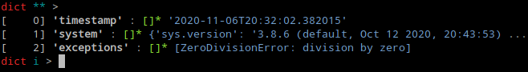
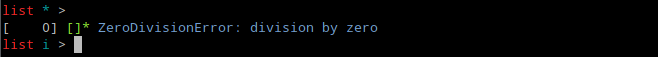
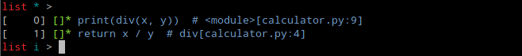
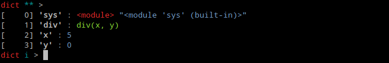

tibidi¶
The aim of this library is to provide an option of post-mortem debugging for the application which would crash on a remote machine, for instance on customer site.
Project is influenced by pydump and powered by dill. This also results in some limitations.
Faulty Application¶
As an example let's take this code of a simple calculator:
import sys
def div(x, y):
return x / y
if __name__ == '__main__':
x = int(sys.argv[1])
y = int(sys.argv[2])
print(div(x, y))
It will certainly raise an exception when divisor is 0.
python divide.py 5 0
Traceback (most recent call last):
File "divide.py", line 9, in <module>
print(div(x, y))
File "divide.py", line 4, in div
return x / y
ZeroDivisionError: division by zero
Traceback Capturing¶
We have following options to take traceback down into a file:
-
We can use tbdump module in place of python interpreter. This will capture any unhandled
Exception:python -m tbdump divide.py 5 0ZeroDivisionError: division by zero Traceback dumped into: traceback.pklIt is suitable when we have a chance to change the way how Python script is invoked. This is also how tbdump can be activated from shebang:
#!/usr/bin/env -S python -m tbdump -
Alternatively we can install tbdump as exception hook using its default implementation:
import sys import tibidi tibidi.set_excepthook() def div(x, y): return x / y if __name__ == '__main__': x = int(sys.argv[1]) y = int(sys.argv[2]) print(div(x, y))python divide.py 5 0ZeroDivisionError: division by zero Traceback dumped into: traceback.pkl -
Finally, we can customize exception handler by preparing its custom implementation:
import sys from tibidi import dump_exception def div(x, y): return x / y if __name__ == '__main__': try: x = int(sys.argv[1]) y = int(sys.argv[2]) print(div(x, y)) except Exception as exc: try: dumpfile = 'traceback.pkl' dump_exception(exc, dumpfile) print(f'{type(exc).__name__}: {exc}') print(f'Traceback dumped into: {dumpfile}') except Exception: print('Failed to dump traceback')python divide.py 5 0ZeroDivisionError: division by zero Traceback dumped into: traceback.pkl
No matter which option we choose, we should get a traceback.pkl file in case
of an exception.
Traceback Analysis¶
-
Some developers may prefer to launch their favourite debugger right away:
poetry run python -m tbdebug traceback.pkltbdebug uses
breakpoint(). Behaviour of this function can be adjusted usingPYTHONBREAKPOINTvariable. -
Alternatively, simple helper script can be used by hose who would like to apply any preprocessing in prior to that:
import tibidi dump = tibidi.load('traceback.pkl') # any preprocessing here breakpoint() -
Last option is for these developers who are familiar with peepshow and may prefer calling it:
poetry run python -m tbpeep traceback.pkl   
Limitations¶
There are a few data types which dill doesn't pickle by definition. At the time of writing these include generator, Frame, Traceback.
Note
Top-level traceback and corresponding frames are translated into substitutionary objects.
Moreover, there are a few open issues with pickling enums and namespace packages.
Last but not least, modules which were captured on a remote host but are not available in local environment are substituted by dummy objects in the process of loading dump files.